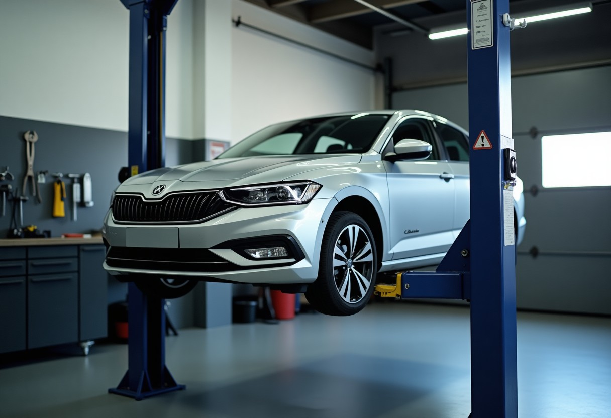
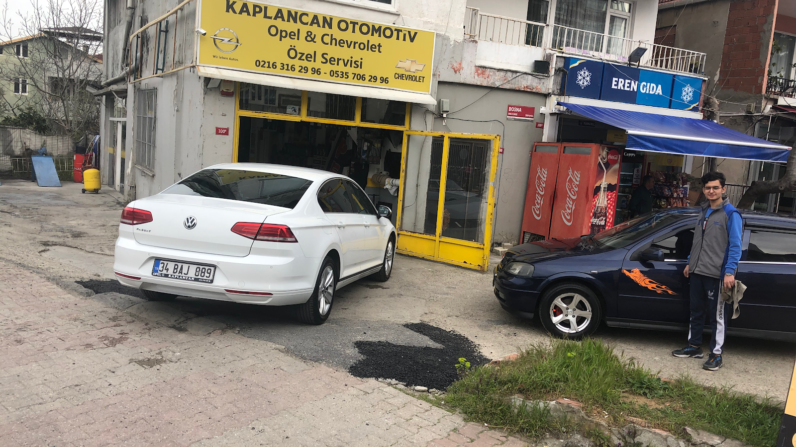
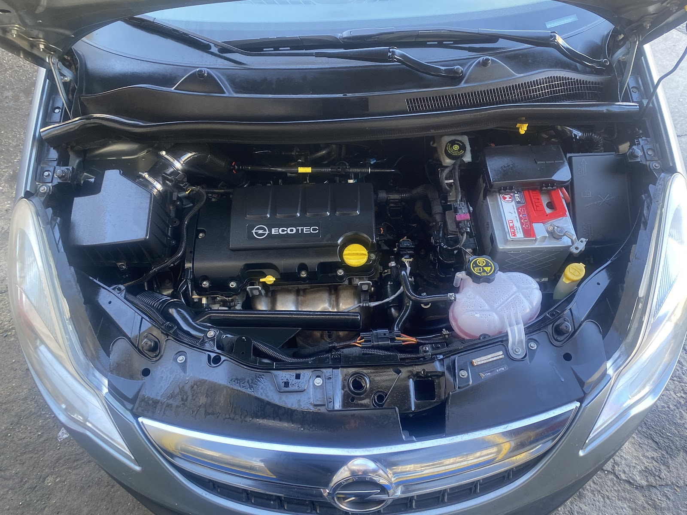
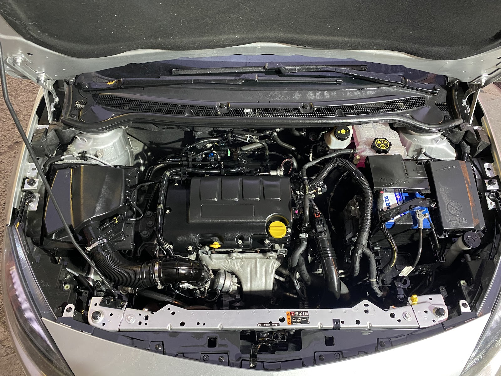
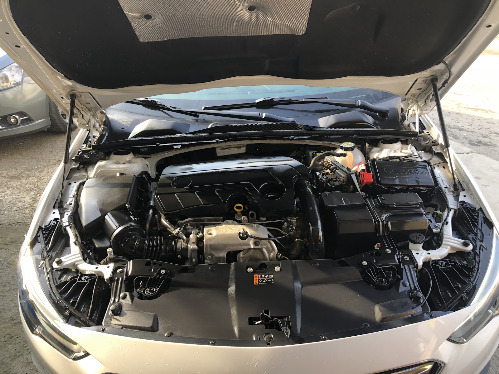

ARIZA ASİSTANI · 20 SANİYE
Aracınızda ne var? Belirtiyi seçin, ne yapmanız gerektiğini görün
Sesi, lambayı ya da hissi seçin: olası nedenler, ne kadar acil olduğu ve tahmini servis süresi anında. Sonucu tek dokunuşla ustaya gönderin.
Üsküdar · İstanbul · Araç Bakım ve Onarımı
Kaplancan, Üsküdar'da Opel ve Chevrolet araçlara özel bakım ve onarım hizmeti verir. Yapılacak her işlemi önce anlatır, onayınızı aldıktan sonra başlarız.

Sesi, lambayı ya da hissi seçin: olası nedenler, ne kadar acil olduğu ve tahmini servis süresi anında. Sonucu tek dokunuşla ustaya gönderin.
Son bakım kilometresini ve yılda ne kadar yol yaptığınızı girin; değişmesi gereken parçalar ve tahmini tarih çıksın, takviminize hatırlatma düşsün.
Boş saatleri görüp randevu alın. Araç servisteyken plakanızı yazın; kabul, teşhis, parça ve hazır aşamalarını anlık görün.
Gün ve boş saati seçin, talebiniz WhatsApp'tan ustaya gitsin.
Örnek: 07 DJT 07 yazıp deneyin.
Yayında her aşama değiştiğinde müşteriye WhatsApp bildirimi de gider.
Yağ ve filtre değişimi dahil, aracınızın düzenli bakım kontrollerini yapıyoruz.
Motorda ve mekanik aksamda ortaya çıkan arızaları tespit eder, gerekeni onarırız.
Balata, disk ve fren sistemi kontrolü ile gerekli değişim ve onarım işlemleri.
Vites geçişlerinde ve debriyajda yaşanan sorunların kontrolü ve onarımı.
Araç üzerindeki elektrik aksamı ve arıza lambalarının nedenini araştırır, çözeriz.
Devirdaim, radyatör ve klima sistemlerinde kontrol, bakım ve onarım.




Merak ettiğiniz her şeyi sakin sakin anlatırız; kararı ne olduğunu bilerek verirsiniz.
Neyin değişmesi gerektiği ve nedeni açıklanır. Ömrünü tamamlamamış parçalara dokunulmaz.
Sezgin usta yapılacak işlemleri tek tek anlatır, teyit aldıktan sonra işe başlar.
Arızanın kökenine inmek için süreci yakından izler, sizinle iletişimde kalırız.
📍 Mahallesi NO: /B, Yavuztürk, Bosna Blv No:100, 34690 Üsküdar/İstanbul
🕑 Pzt–Cmt 09:00–18:00 · Paz kapalı